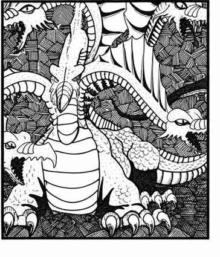

九头蛇 · Hydra
 |
|
九头蛇是爬行动物状怪物，栖息在沼泽、湿地等地方，也会在地下巢穴中出没。它们有四足的大型躯体与 5–12 个头（掷八面骰决定数量）。每个头有 1 颗生命骰、完整 8 点生命值。只有所有头都被杀死，九头蛇的身体才会死亡。
九头蛇的攻击次数等于头数；决定命中检定所用的攻击等级时，每个头计为 1 颗生命骰。因此，七头九头蛇的每次头部攻击都按 7 颗生命骰怪物进行命中检定。它可以同时攻击数名对手，最多 4 个头能同时攻击同一目标。伤害取决于头数：5–6 个头时每次造成 1–6 点伤害，7–10 个头造成 1–8 点，11–12 个头造成 1–10 点。
外观。 九头蛇呈灰褐至黑褐色，腹部颜色较浅，略带黄色或黄褐色；眼睛从琥珀色到橙色，牙齿黄白色。
勒拿九头蛇 Lernaean Hydra。 这种九头蛇极罕见，未受攻击前与普通九头蛇无法区分。每当一个头被砍下或杀死，1–4 个近战轮后便会长出两个新头，除非用火烧灼被杀的颈部或残桩。因此，一只五头勒拿九头蛇在一场战斗中便可能长到十二头，生命骰数与攻击能力也随之增加。
火焰九头蛇 Pyrohydra。 火焰九头蛇也与普通九头蛇十分相似，颜色可能略带红色。它们很少超过七个头；10% 有八个头，从未发现九头火焰九头蛇。每个头每天可喷吐两次火焰，火焰呈锥形，从口部约半寸直径扩展到末端 1 寸直径，长度为 2 寸，造成 8 点伤害；通过对抗龙息武器的豁免检定可将伤害减半至 4 点。火焰九头蛇也能照常用头攻击。